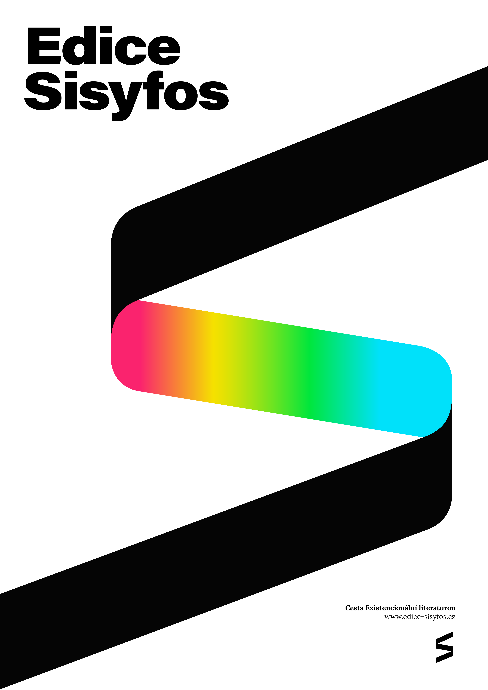
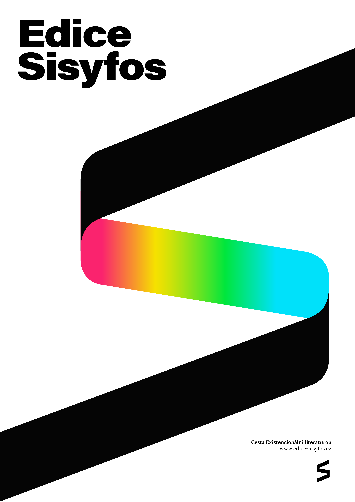
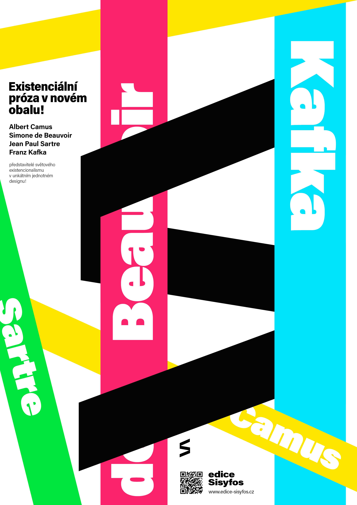
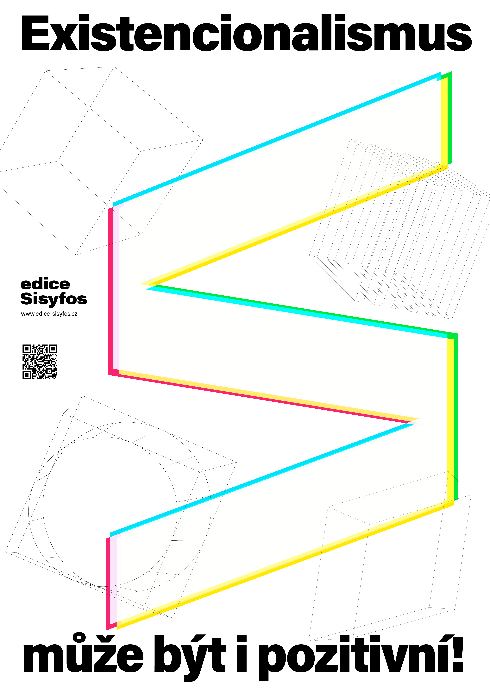
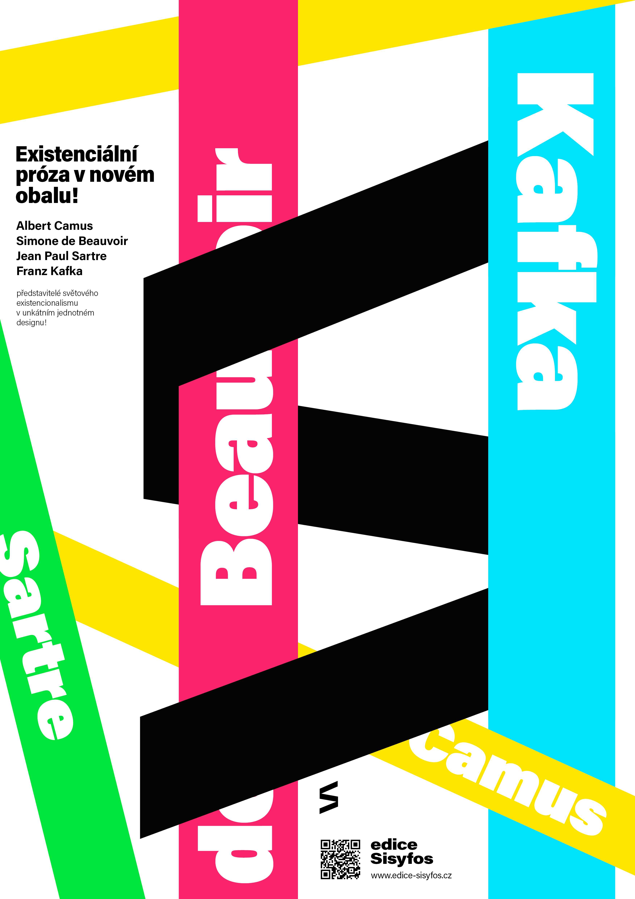
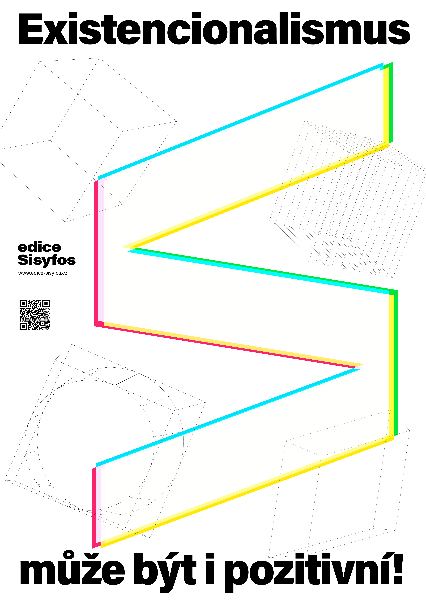

edice
Sisyfos
Cizinec / Zeď / Proměna / Druhé pohlaví
Cizinec
Jeden z nejproslulejších románů 20. století, jímž se Albert Camus stal duchovním otcem celé jedné poválečné generace, byl bezprostředně po svém vydání v r. 1942 označen kritikou za "ochablost ducha" a "degeneraci lidství".
Cizinec
Ve skutečnosti je příběh Mersaulta, náhodného vraha odsouzeného k smrti, protože odmítá přijmout roli v společenských hrách, působivou oslavou člověka, a to člověka revoltujícího. Podle vlastní Camusovy interpretace "cizinec" až do konce odmítá lhát a bez jediného náznaku hrdinského chování souhlasí s tím, že zemře pro pravdu, aniž by ji "těm druhým" vnucoval. Mersault skutečnost přijímá, ale nehodnotí, odmítá ji vykoupit jakoukoli transcendencí. Odmítá Boha, přesněji řečeno Bůh ho nezajímá ("Už mi nezbývá mnoho času... nechtěl jsem o něj přicházet kvůli Bohu," uvažuje při návštěvě Kaplana ve své cele).
A přece Mersault zažívá před popravou pocit štěstí, existenciálního přesahu prostého všech iluzí, plnějšího než víra: "Jako by mě ten prudký hněv očistil od všeho zlého a jako by mě zbavil naděje, já pod tou nocí těžkou hvězdami a znameními se poprvé otvíral něžné netečnosti světa."
Zeď
Sbírka novel vznikala postupně v rozmezí tří let. Některé z nich byli nejprve otištěny samostatně, avšak od roku 1939, kdy vyšly poprvé pod názvem Zeď (Le Mur), byly nadále vždy publikovány společně ve stejném pořadí a pod stejným titulem.
Zeď
Titulní povídka knihy napsané v roce 1939 je z období španělské občanské války. Pojednává o třech zatčených levicových republikánech, kteří jsou bez řádného soudního procesu falangisty odsouzeni k smrti zastřelením. Rozsudek má být vykonán následující ráno.
Jedná se o mladého Juana Mirbala, který tvrdí, že se na rozdíl od svého anarchistiského bratra Josého neúčastnil žádných akcí. Nechápe, proč byl uvězněn a odsouzen k smrti. Druhým odsouzencem je Tom Steinbock sloužící v Mezinárodní brigádě, jenž v rozhovoru s kolegy noc před popravou popisuje své činy a vraždy. Vypravěčem je třetí vězeň, Pablo Ibbieta. Hlavní část se odehrává během noci před popravou. Sartre zde popisuje psychický a fyzický stav člověka, který si je vědom blízké smrti. Pablo říká: "Život neměl cenu, protože byl u konce."
Nad ránem jsou Juan a Tom odvedeni na popraviště. Pablo je překvapen, když jej odvedou do jiné místnosti, kde má výměnou za svůj život poskytnout informace o úkrytu vůdce skupiny, Ramóna Grise. Ví, že vůdce je ukrytý u bratrance. Rozhodne se přivést nepřátele na falešnou stopu a tvrdí, že Ramón Gris je ukrytý na hřbitově. Za krátkou chvíli se vyšetřovatel vrací do místnosti, Pablo očekává svoji smrt. Přesto je odveden na dvůr a nic se neděje; žije. Od nového vězně se dovídá, že Ramón Gris před několika dny opustil původní úkryt a schoval se na hřbitově, kde jej dopoledne zastřelili.
Místnost
Příběh pojednává o rodině Darbédatově. Stará nemocná matka potřebuje péči, vede pravidelné rozhovory se svým mužem Charlesem, které ji stresují. Jejich dcera Eva žije řadu let s duševně nemocným Pierrem, který jako ona neopouští byt. Eva se o něj stará a sdílí jeho osud. Pierrův stav se zhoršuje, trpí halucinacemi, ženu oslovuje Agáto a lékař Franchot mu dává poměrně krátký čas na to, než zcela opustí realitu.
Když se Charles Darbédat dozví od své ženy, že s ním Eva stále udržuje intimní vztah, rozhodne se jí přesvědčit, aby byl Pierre hospitalizován na klinice a ona začala nový šťastnější život. Přesto neuspěje, pouto mezi ní a mužem je příliš velké. Po dalším z řady blouznivých stavů Eva přitiskne rty k manželově ruce a tiše pronese, že ho zabije dřív, než bude muset být internován na klinice.
Hérostratos
Hérostratos se proslavil jediným činem, zapálením Artemidina chrámu v Efesu. Také hlavní hrdina Paul Hilbert je ničím nevýznamný pařížský zaměstnanec, který žije samotářským způsobem života. Pohrdá lidmi a nenávidí je. Navštěvuje veřejný dům, kde sleduje nahé prostitutky, ale tělesný kontakt je mu odporný.
Je fascinován velkým činem – sní o tom, že vyjde na ulici a postřílí několik lidí, čímž se zapíše do dějin. Po výpovědi z práce přebývá v bytě a po útratě posledních peněz se rozhoduje k činu. Ještě před tím odešle 102 kopií dopisu slavným francouzským spisovatelům, v němž vysvětluje svou motivaci. Nakonec ve špatném psychickém stavu vychází do pařížských ulic, kde se jej ptá hledající chodec na konkrétní ulici. Hilbert mu vpálí tři kulky do břicha, začíná utíkat před dopadením, vystřelí další dvě kulky, aby unikl davu a zaběhne do kavárny, kde se uzamkne na toaletě. Je v koncích, zbývá poslední kulka, kterou zamýšlí spáchat sebevraždu. Slyší jak ho kdosi vyzývá, aby odemkl, vzdal se a že mu nic neudělají. Revolver si strčí do úst, ale nemůže zmáčknou spoušť. Vyndá ho, hodí na zem a otevře dveře.
Intimita
Lucienne Crispinová zvaná Lulu a Henri jsou manželé, intimně spolu nežijí a vztah má pouze formální charakter. S trápeními se žena již několik let svěřuje v kavárně své přítelkyni Rirretě. Ta na ni naléhá, aby mrtvý poměr neudržovala a od manžela odešla. Lule se dvoří atraktivní muž Pierre, jenž se jí také líbí a sama sní o tom, že spolu odjedou do jeho vily k moři v Nizze. Poté, co dá Henri facku jejímu mladšímu bratru, pohár trpělivosti přeteče. Ráno Lulu odchází do práce a nechává manželovi na stole vzkaz, že má uvařenou čočku a definitivně od něj odchází. Odpoledne to sděluje Rirretě, prozatím bude bydlet v malém pařížském hotelu. S Pierrem je smluvená, že spolu odjedou do Nizzy, tak jak zamýšleli. Společně s Rirretou jdou z odpolední kávy nakupovat a na ulici potkávají Henriho, který je dohání a zoufale naléhá, aby se s ním manželka vrátila domů. Ta ujíždí taxíkem. Večer na hotelovém pokoji, když po milování s Pierrem osiří, dostává výčitky svědomí a zjišťuje, že pouto k manželovi je pevnější než očekávala. Je rozhodnuta jít ještě jednou do bytu a rozejít se s ním v přátelství. Henriho nachází v depresi, říká mu, že odjíždí pryč. Přes jeho prosby odchází.
Dopoledne však Pierre na hotelovém pokoji objevuje pouze její lístek, ve kterém sděluje, že ji na hotelu navštívili sousedé Texierovi a přemlouvali, ať se vrátí domů, že je manžel v koncích. Pierra prý miluje, chce ho nadále vídat, ale nemůže s ním odjet. Musí se zodpovědně postarat o muže. Jen je Pierrovi zvláštní, jak ji na hotelu nalezli sousedé z domu...?
Mládí vůdce
Příběh je vyprávěn z perspektivy Luciena Fleuriera, který se narodil do rodiny malého průmyslníka zaměstnávajícího na sto dělníků. Je předurčen převzít otcovu pozici a být vůdčím duchem. Malý Lucien prochází od prvních krůčků postupným procesem sebeuvědomování, kdy začíná vnímat, že existují rozdíly mezi mužským a ženským pohlavím, pak nastupuje období vzdoru, uvědomuje si, že by měl milovat rodiče a předstírá chování a pravidla, která vyžaduje všeobecná konvence. Má komplexy, v životě je neukotven a stále hledá jeho smysl. Dospívá k názoru, že nic ani on neexistuje, vše je jen přelud. Na konci prázdnin si naplánuje vykonat sebevraždu malým revolverem uloženým v maminčině stole. Nakonec se k ní neodhodlá.
Na gymnáziu se prostřednictvím stejně tápajícího spolužáka Berliaka seznamuje se surrealistou Bergérem, jehož vlivu na čas zcela propadne. Čte Rimbauda, objevuje Freudovu psychoanalýzu, má nutkání vypravit se za ním do Vídně, uvědomuje si, že je mu vlastní oidipovský komplex, přestože je heterosexuální orientace poddává se svému „učiteli“ na pokoji během výletu. Trpí výčitkami, je sám sebou zhnusen a obává se vyzrazení intimního poměru s jiným mužem, které by jistě ohrozilo jeho budoucnost. Přerušuje další kontakty s ním i Berliakem. Navazuje přátelství se spolužákem Guigardem, vyráží spolu do společnosti. Poznává první lásku Maud, ale nemíní se vázat. Kamarád ho přivádí do skupiny mladých radikálních přátel, v níž se mu zalíbí. Tvrdě propagují francouzský nacionalismus, Lucien je sám silným antisemitou a je na to hrdý.
Na ulici zkopou do bezvědomí chodce, který četl komunistický deník L'Humanité. Našel svou novou identitu, dozrál čas na změnu, nechal za sebou období hledání a nejistoty, jeho existence má jasný cíl, bude se chovat odpovědně, dostuduje vysokou školu, nahradí otce ve vůdcovské pozici firmy, brzy se ožení a bude mít kupu dětí. Z mladíka se stal muž, tu existenciální změnu je nutné světu zvěstovat ještě novým pěstěným knírem.
Proměna
Proměna (německy Die Verwandlung) je povídka Franze Kafky vydaná roku 1915. Poprvé vyšla tiskem v říjnovém čísle expresionistického měsíčníku Die Weißen Blätter. V knižní podobě ji ještě v prosinci téhož roku publikovalo nakladatelství Kurta Wolffa.
Proměna
Povídka Proměna začíná probuzením hlavní postavy, obchodního cestujícího Řehoře Samsy (v originále Gregor Samsa) a jeho zjištěním, že se proměnil v obří hmyz (tato základní informace celého textu je čtenáři představena v jediné větě v úvodu – „Když se Řehoř Samsa jednou ráno probudil z nepokojných snů, shledal, že se v posteli proměnil v jakýsi odporný hmyz.“). Přestože se snaží svou indispozici skrýt před rodinou, je nakonec odhalen. Vyděšení rodiče a sestra Markétka se rozhodnou Řehoře zavřít v jeho pokoji v jakési domácí internaci. Samsa po celou dobu svého změněného stavu uvažuje racionálně, nepropadá depresím a zachovává chladnou hlavu (jeho první starostí je, jak jako hmyz půjde do práce). Řehoř jako hmyz rozumí nadále lidské řeči, jemu samotnému však ostatní příliš nerozumí, nemůže tedy se svým okolím komunikovat.
Situace v rodině se od Řehořovy proměny značně zhorší; jednak přijdou o Řehořovu finanční podporu (dosud je ze svého platu živil převážně on), jednak strádají rodiče i sestra psychicky. Otec se navrací do zaměstnání, pracuje jako sluha, Markétka prodává v obchodě a také se učí francouzštinu. Matka ani otec do Řehořova pokoje nevstupují, stará se o něj mladší sestra Markéta, vždy když za ním sestra přichází, tak se Řehoř schová pod pohovku, aby ji neděsil. Jediný z lidí, kdo se s danou situací smíří, je otrlá posluhovačka, která s Řehořem-hmyzem jedná rázně a bez okolků. Jednou se Markéta s matkou rozhodnou vystěhovat z Řehořova pokoje nábytek v dobrém úmyslu, Markétka se domnívá, že by se mu lépe lezlo po stěnách a stropu, čímž se Řehoř skutečně rád baví. Ovšem matka se obává, že by si to Řehoř mohl vysvětlit jako definitivní zavrhnutí ze strany rodiny. Řehoř si nakonec uvědomí, že by byl rád, kdyby mu pokoj ponechali, tak jak je. Brání tedy svůj oblíbený obraz, spatří ho matka a upadne do mdlob. Vyhrocenou situaci se rozhodne vyřešit zaskočený otec, nakonec po Řehořovi hází jablka, čímž ho těžce zraní.
Řehořův zdravotní stav se zhoršuje. Ztěžuje se i atmosféra v rodině; hmotný nedostatek a vypětí ze skrývání Řehoře v bytě doléhají na jeho rodiče i Markétku, která navrhuje Řehoře odstranit. Rodina si do bytu nastěhuje podnájemníky, kteří o Řehořovi nevědí. Později ho ale spatří, protože Řehoř si chtěl poslechnout, jak jim Markétka hraje na housle, a tak opustil svůj pokoj. Otec se ho snažil zahnat zpět do jeho pokoje, ze kterého se postupem času stalo skladiště nepotřebných věcí. Nájemníci dávají okamžitou výpověď. Nad ránem Řehoř opuštěný umírá. Ráno jej nalezne posluhovačka („Pojďte se podívat, ono to chcíplo; leží to tam dočista chcíplé!“) a jeho mrtvolu sama odklidí. Téhož dne uspořádají Samsovi, jimž se viditelně ulevilo, výlet z města a probírají nadějné plány do budoucna.
Druhé pohlaví
Druhé pohlaví (Le deuxième sexe) je kniha Simone de Beauvoir (1908–1986) pojednávající o psychologii a postavení žen ve společnosti. Knihu autorka napsala v roce 1949, česky vyšla v nakladatelství Praha Orbis v roce 1966.
Druhé pohlaví
Hlavním paradigmatem této knihy je kritika vztahů muže a ženy jako mocensky konstruované duality Já (subjekt) – Druhý (objekt). Autorka ve své knize tento koncept velice podrobně filozoficky analyzuje a zasazuje ho do širokého historického kontextu.
Existenciální konflikt ženy
„Žena je určována svým vztahem k muži, nikoliv muž svým vztahem k ní, žena je nepodstatná vzhledem k podstatnému. On je subjekt, on je Absolutno. Ona je to Druhé.“ Pouto, které váže muže a ženu, nelze srovnat s žádným jiným poutem, protože pohlavní odlišnost je biologický fakt, nikoliv nějaký moment lidských dějin. Tento protiklad se utvořil v lůně prapůvodního „Mitsein“ (spolubytí) a žena ho nikdy neporušila. Dvojice je zde základní jednotkou, v rámci které jsou obě pohlaví k sobě připoutána. Rozvrstvení společnosti podle pohlaví není možné.[4] Ovšem stejně jako každá lidská bytost má žena potřebu ospravedlnit svoji existenci formou transcendence, protože je stejně jako každý člověk autonomní svobodou, ale objevuje sama sebe a provádí své volby ve světě, kde je jí vnucováno, aby byla objektem, imanencí. „Drama ženy je konflikt mezi základním požadavkem každého subjektu, který se vždycky pokládá za podstatný, a požadavky situace, která z ní vytváří bytost nepodstatnou. Beauvoir se ptá, jakým způsobem může žena v těchto podmínkách dosáhnout svobody (srov. tamtéž, str. 23-24). Na tuto otázku se snaží odpovědět diskuzí o tom, jak se na ženu dívá biologie, psychoanalýza, historie, literatura, náboženství či mytologie, které podle jejího názoru slouží mužům jako nástroje, které udržují ženy v závislosti. V kapitole Mýty Simone de Beauvoir mimo jiné píše: „Každý mýtus předpokládá Subjekt, který promítá své naděje a plány do transcendentního nebe. Ženy nekladly samy sebe jako subjekt a také nevytvořily mýtus muže, v němž by se zračily jejich plány.“
 

 


